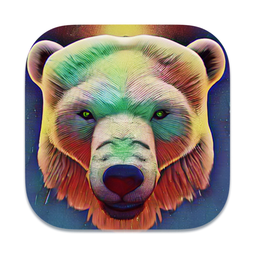

Text and code you want to read
Markdown, text and fenced code. Now with syntax highlighting for programming languages.
MARKDOWN / TEXT / CODE
Grizzly RUMarkdown, text and source code —
in the quiet space of Grizzly.
01 / ROOM TO THINK
Text. Code. Context.
Whatever you're working on.
"""Small demo for syntax highlighting."""
from dataclasses import dataclass
@dataclass
class Task:
title: str
done: bool = False
def summary(tasks: list[Task]) -> str:
finished = sum(1 for t in tasks if t.done)
return f"{finished}/{len(tasks)} done"
tasks = [Task("write docs", True)]
print(summary(tasks))"""Small demo for syntax highlighting."""
from dataclasses import dataclass
@dataclass
class Task:
title: str
done: bool = False
def summary(tasks: list[Task]) -> str:
finished = sum(1 for t in tasks if t.done)
return f"{finished}/{len(tasks)} done"
tasks = [Task("write docs", True)]
print(summary(tasks))02 / CODE IN FOCUS
Highlighting for keywords, strings and comments.
Edit with ease in edit mode.
View two files at the same time.
Also: JSON, YAML, INI / TOML, XML / HTML, TeX and logs.
JSX, TSX and SCSS are included in their language families.
03 / THOUGHTFUL EVERY DAY
Markdown, text and fenced code. Now with syntax highlighting for programming languages.
MARKDOWN / TEXT / CODECompare documents side by side, switch tabs and find what you need as you type.
TABS / SPLIT VIEW / SEARCHThe app works with local files. No account, no telemetry and no sending your documents to a server; it goes online only to check GitHub for updates.
OFFLINE / NO TELEMETRY04 / JUST GET STARTED
Choose your platform. Grizzly will take it from there.
Apple M1 chips and newer
Download .dmg macOS 13+ · ARM64Mac with an Intel processor
Download .dmg macOS 13+ · x64Portable — no installation needed
Download .exe Windows 10 / 11 · x64v1.2.2 · Download directly from GitHub Releases
All releases and SHA-256Builds are unsigned and not notarized: your system may show a warning on first launch. Installation guide
Grizzly is an open-source project.
Have an idea or found a bug? Join us on GitHub.